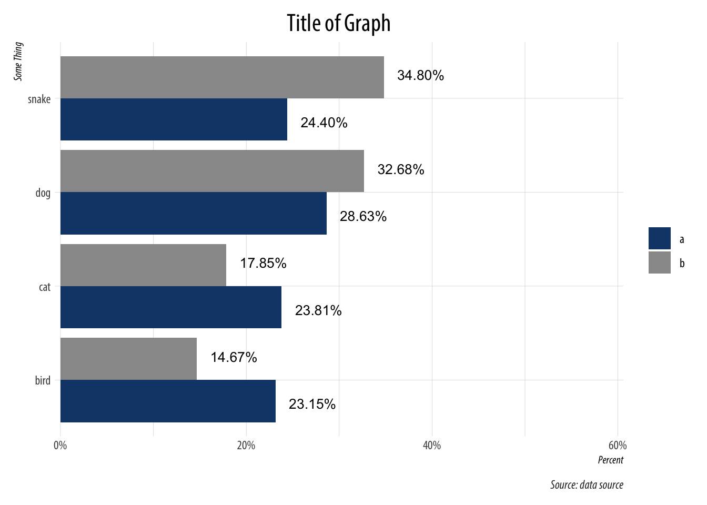
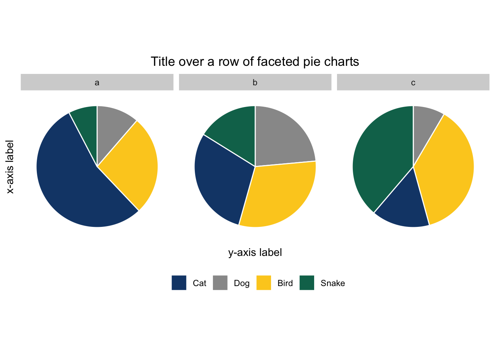
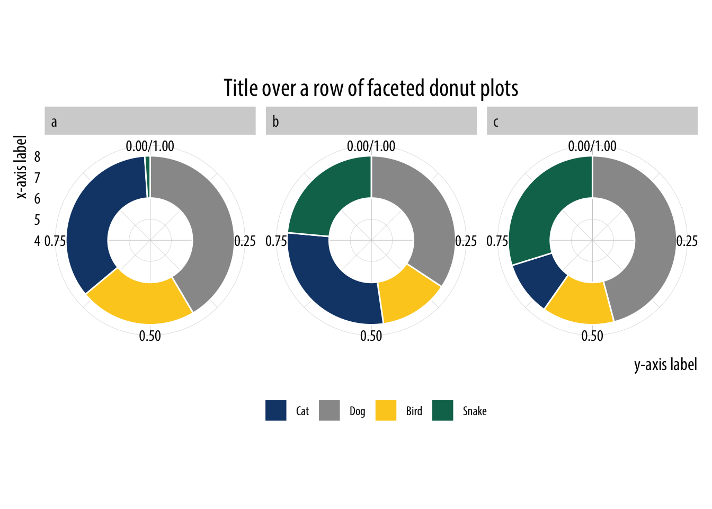
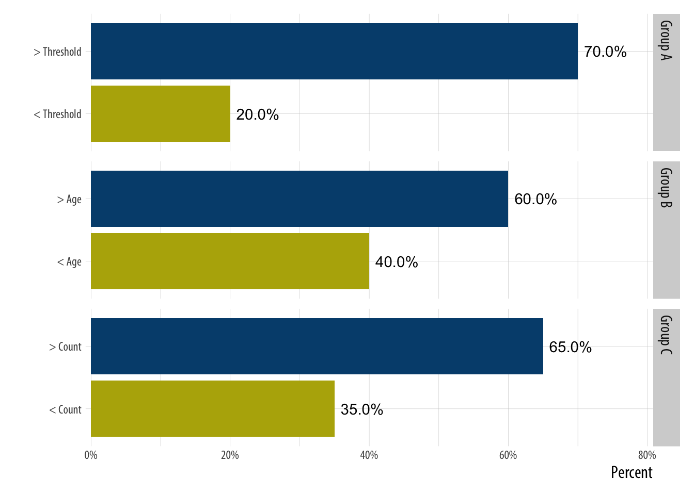
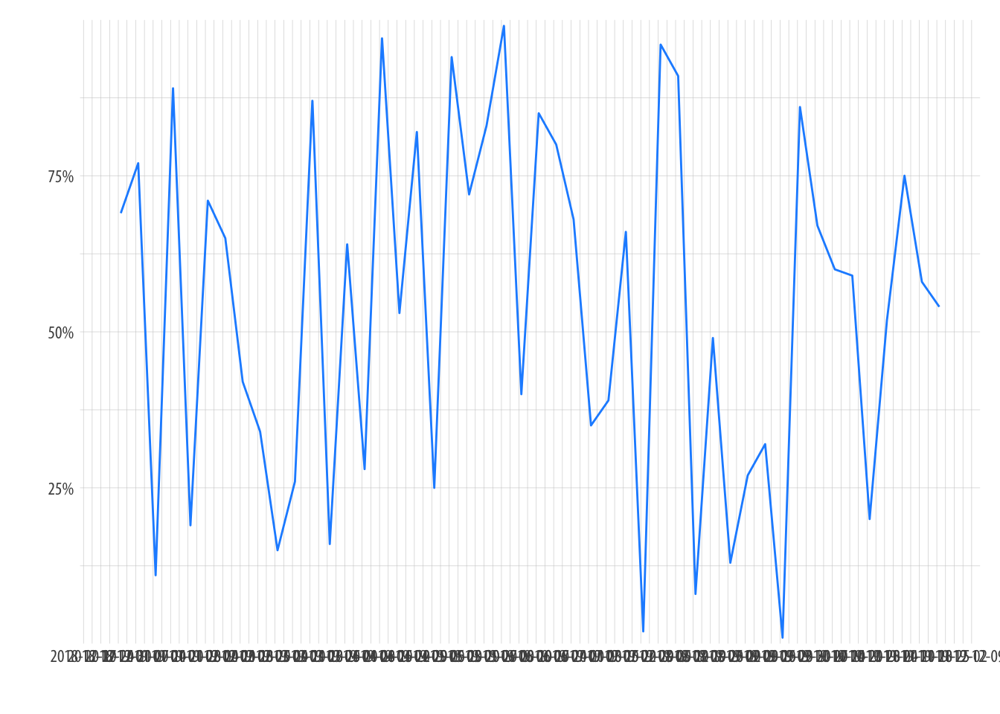
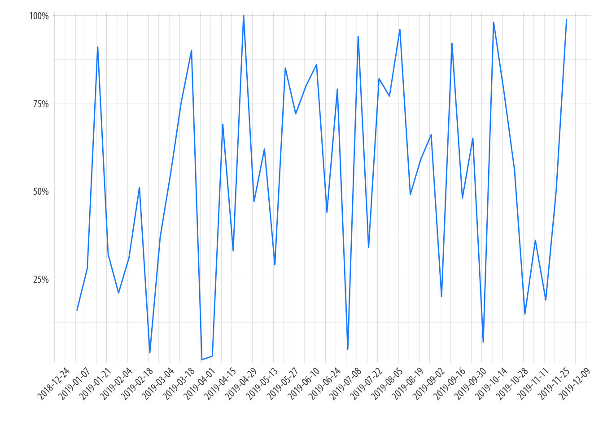
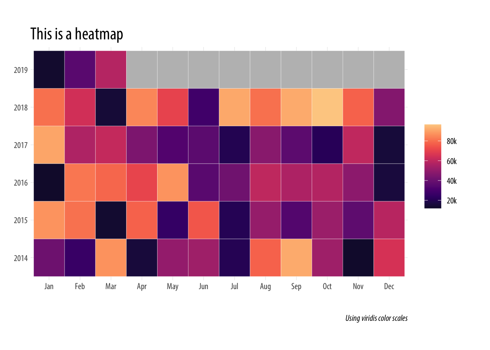
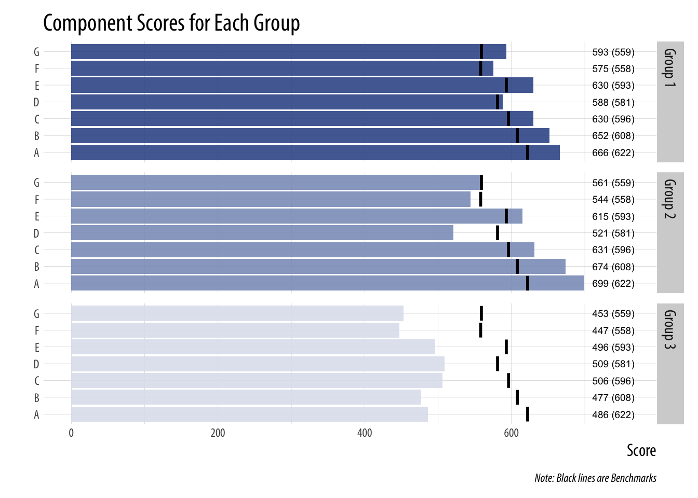
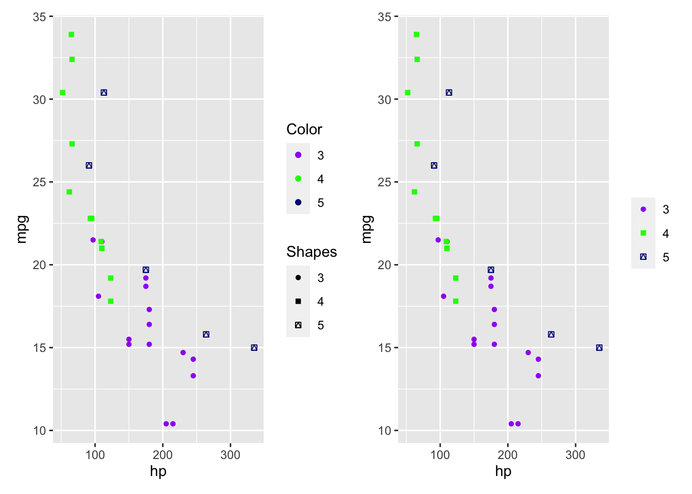

Snippet files are periodically updated with how-to’s for better plotting techniques.
I’ve borrowed heavily from the hrbrthemes and myriad packages to create a clean theme. Get it from github with the following…
devtools::source_url("https://raw.githubusercontent.com/taylorgrant/sandbox/master/theme_twg.R")With grouped bar charts position = "dodge" is used and the geom_text function also needs to be put into the same position. Note some other aesthetic changes here – coord_flip() was used and within that the limits of the y-axis were extended (this is because coord_cartesian() doesn’t work with the coordinates flipped). Within the theme section the title was centered, the axis labels were pushed to the edges and italicized, the caption font was altered. We also borrowed the hrbrthemes package function scale_y_percent to easily convert the axis to a percentage.
tibble(type = rep(c('a','b'), each = 4),
cat = rep(c('cat', 'dog', 'bird', 'snake'),2),
n = sample(1:500, 8)) %>%
group_by(type) %>%
mutate(frac = n/sum(n)) %>%
ggplot(aes(x = cat, y = frac, group = type,
fill = type, label = scales::percent(frac))) +
geom_bar(stat = "identity", position = "dodge") +
coord_flip(ylim = c(0,.6)) +
theme_twg() +
hrbrthemes::scale_y_percent() +
geom_text(aes(x = cat, y = frac+.04,
label = scales::percent(frac)),
position = position_dodge(1),
size = 3.5) +
scale_fill_manual(values = c("#154577", "#999999"), name = "") +
theme(legend.position = "right",
plot.title = element_text(hjust = .5),
axis.title.x = element_text(hjust = 1, face = "italic", size = 8),
axis.title.y = element_text(hjust = 1, face = 'italic', size = 8),
plot.caption = element_text(color = "#303030", face = "italic")) +
labs(x = "Some Thing", y = "Percent",
title = "Title of Graph",
caption = "Source: data source")
Of course no one likes pie charts, but occasionally someone wants one. A single pie chart is simple to make in ggplot (see here), but what if you want to facet your pie charts?
This was the old way of having to make pie charts with ggplot and it still works really well. Since we applied theme_minimal() (not sure it’s necessary in this case) to everything, we have to go back in and recolor the facet labels within the theme.
tibble(type = rep(c('a','b', 'c'), each = 4),
cat = rep(c('cat', 'dog', 'bird', 'snake'),3),
n = sample(1:500, 12)) %>%
group_by(type) %>%
mutate(frac = n/sum(n),
ymax = cumsum(frac),
ymin = c(0, head(ymax, n = -1))) %>%
ggplot(aes(fill = factor(cat), ymax = ymax, ymin = ymin,
xmax = 8, xmin = 6)) +
facet_wrap(~type, ncol = 3) + geom_rect(colour = "white", show.legend = TRUE) +
coord_polar(theta = "y") + theme_minimal() +
scale_fill_manual(values = c("#154577", "#999999", '#fccd22','#0c725a'),
labels = c("Cat", "Dog", 'Bird', "Snake"),
name = "") +
theme(legend.position = "bottom",
panel.grid=element_blank(),
axis.text=element_blank(),
axis.ticks=element_blank(),
plot.title = element_text(hjust = .5),
strip.background =element_rect(fill="lightgray", color = NA)) +
labs(x = "x-axis label", y = "y-axis label",
title = "Title over a row of faceted pie charts")
Note that you can turn these pie charts into donut plots by adding xlim(4,8) within the code. The first number decides the thickness of the donut (larger = thicker); the second number dictates the size of the donut (smaller equals larger).

Sometimes you want to make a point about how certain factors are always larger or smaller than another across multiple groups. It can all be plotted out on the same graph, but it’s difficult to draw attention to the groupings - ggplot doesn’t add space between groups on its own. But if we facet by group, we can gain a little breathing room between each group. And by using facet_grid we can rotate the graph.
tibble(group = c('Group A', 'Group A',
'Group B', 'Group B',
'Group C', 'Group C'),
fctr = c('< Threshold', '> Threshold',
'< Age', '> Age',
'< Count', '> Count'),
value = c(.2, .7, .4, .6, .35, .65)) %>%
mutate(order = c(1,2,1,2,1,2)) %>%
ggplot(aes(x = fctr, y = value, label = scales::percent(value), fill = factor(order))) +
geom_bar(stat = "identity") +
facet_grid(group ~ ., scales = "free_y") +
coord_flip(ylim = c(0, .8)) +
hrbrthemes::scale_y_percent() +
scale_fill_manual(values = c("#b6af06", "#004d7c")) +
geom_text(nudge_y = .04) +
theme_twg() +
theme(legend.position = 'none',
strip.background =element_rect(fill="lightgray", color = NA)) +
labs(x = "", y = 'Percent')
This graph looks terrible.

But we can do two things to make the graph work. Scale the dates being used in the axis with scale_x_date and rotate the label in the them.
tibble(date = seq.Date(as.Date("2019-01-01"), as.Date("2019-12-01"), by = "week"),
value = sample(1:100, 48)/100) %>%
ggplot(aes(x = date, y = value)) +
geom_line(col = "dodgerblue") +
scale_x_date(date_breaks = "2 weeks") +
theme_twg() +
hrbrthemes::scale_y_percent() +
labs(x = "", y= "") +
theme(axis.text.x = element_text(angle = 45, hjust = 1))
Heatmaps are simple to make. In this case, we have data at the monthly level with some missing data. Options are used within the fill command to ensure the lower and upper extremes aren’t too dark or light; na.value allows us to change the values of our NA months. Additionally, the plot margins are altered to give more room around the plot while leaving the left margin untouched to give it sense of width.
library(viridis)
tibble(date = seq.Date(as.Date("2014-01-01"), as.Date("2019-12-01"), "month"),
value = c(sample(10000:100000, 63), rep(NA_integer_, 9))) %>%
mutate(month = lubridate::month(date, label = TRUE),
year = factor(lubridate::year(date))) %>%
ggplot(aes(x = month, y = year, fill = value)) +
geom_tile(color = "white") +
scale_fill_viridis(option="magma", begin = .1, end = .9,
na.value = "gray",
breaks = seq(20000, 100000, 20000),
labels = c("20k", "40k", "60k", "80k", "100k")) +
theme_twg() +
theme(legend.title = element_blank(),
plot.margin=unit(c(1,1,1,0),"cm")) +
labs(x = "", y = "",
title = "This is a heatmap",
caption = "Using viridis color scales")
We’ll assume that each bar is a category with a separate benchmark and we’ll have different groups so we’ll also add in facets.
# build a dataset
data <- tibble(component = c("A", "B", "C",
"D", "E", "F", "G"),
g1 = c(666, 652, 630, 588, 630, 575, 593),
g2 = c(699, 674, 631, 521, 615, 544, 561),
g3 = c(486, 477,506, 509, 496, 447, 453),
benchmark = c(622, 608,596,581,593,558,559))
# now graph
data %>%
gather(group, score, 2:4) %>%
mutate(group = case_when(group == "g1" ~ "Group 1",
group == "g2" ~ "Group 2",
group == "g3" ~ "Group 3"),
score2 = paste0(score, " (", benchmark, ")")) %>%
ggplot(aes(x = component, y = score, label = score2, fill = group)) +
geom_bar(stat = "identity",alpha = .9) +
facet_grid(group ~ .) +
coord_flip() +
ylim(c(0, 760)) +
geom_text(aes(x = component, y = 739),
size = 2.5) +
scale_fill_manual(values = c("#3b5998", "#8b9dc3","#dfe3ee"),
# labels = c("All is Bright",
# 'Jenni Mistletoe',
# "Most Wonderful\nSale of the Year"),
name = "") +
geom_segment(aes(xend = component, yend = benchmark-2, y = benchmark+2), size = 5, lineend = "butt",
color = "black") +
theme_twg() +
theme(strip.background = element_rect(fill="lightgray", color = NA),
legend.position = "none") +
labs(x = "", y = "Score",
title = "Component Scores for Each Group",
caption = "Note: Black lines are Benchmarks")
If you manually specify colors and add shapes in a scatterplot, two legends are created. You can unify them by naming them the same thing, or naming them both as NULL.
library(patchwork)
p1 <- ggplot(mtcars, aes(x = hp, y = mpg, group = factor(gear), col = factor(gear), shape = factor(gear) )) +
geom_point() +
scale_color_manual(name = "Color", values = c("purple", "green", "navyblue")) +
scale_shape_manual(name = "Shapes", values = c(16, 15 ,14))
p2 <- ggplot(mtcars, aes(x = hp, y = mpg, group = factor(gear), col = factor(gear), shape = factor(gear))) +
geom_point() +
scale_color_manual(name = NULL, values = c("purple", "green", "navyblue")) +
scale_shape_manual(name = NULL, values = c(16, 15 ,14))
p1 | p2